sovrn.art · Curated collection
by Martin Lukas Ostachowski
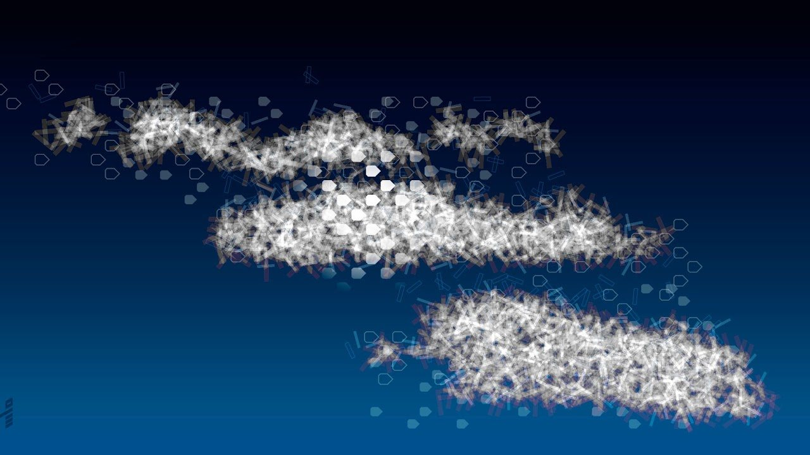
Noctilucent Mementi is a generative chronicle that encapsulates 5 years of Martin Lukas Ostachowski's travels and work with clouds in cryptoart. Each artwork is a location-specific memento, forming a visual timeline of the artist's development, milestones and travels between 2018 and 2023, spanning 4 continents and 11 countries. The term 'noctilucent,' means 'luminous in the dark' and references high, invisible clouds. 'Mementi' represents the artist's curated visual memories. In MLO's words, "Noctilucent clouds are invisible memories, glowing when revisited." For MLO, clouds serve as a medium for speaking about the way that we transform and preserve intangible presences, both through personal memory and through digital wallets. In this, his first serial collection, MLO celebrates 5 years of artistic evolution since the creation of his first cloud artwork in September 2018.
Over the last 5 years, MLO has come to be known as "the cloud artist." He began tokenizing his art in June 2018, and has since become a formative figure in the cryptoart movement, making fundamental contributions to the cultural understanding of the medium. His early works use geometric minimalism and artistic data visualization to investigate and educate about the potential meanings of blockchains and tokens. With the piece "Cloud Seed Phrase Visualization" (September 2018), he arrived at a mode of translating data into metaphor that has since become the spine of his practice. In his words, "I find the analogy to clouds particularly intriguing, as we store only the rights to assets in our digital wallets while the actual digital assets remain permanently on the blockchain; the digital assets therefore remain intangible much like clouds in the sky."
Clouds have personal weight for MLO as someone whose life has been defined by movement and transition. Born in Poland, raised in Germany, emigrated to Canada, travelling constantly, he has lived in more than 33 different places through the years. For him, clouds are both an emblem of transience and a constant companion. In MLO's art, the distributed nodes that constitute a blockchain become a symbol of hope. This living cloud maintained by shared belief harbors the possibility of continuity for an individual identity through the fragile impermanence of physical locations.
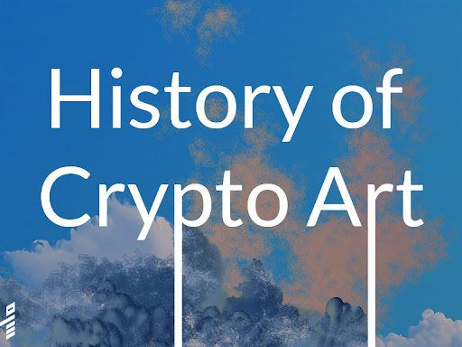
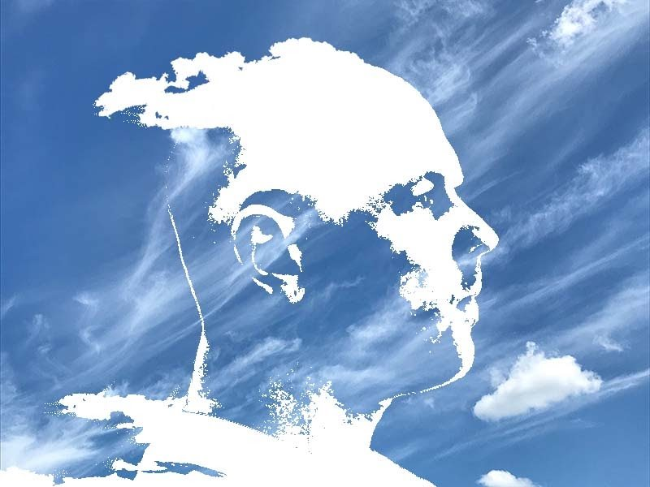
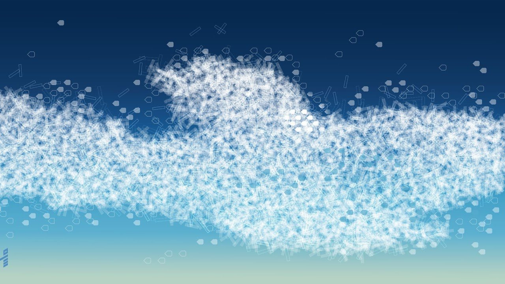
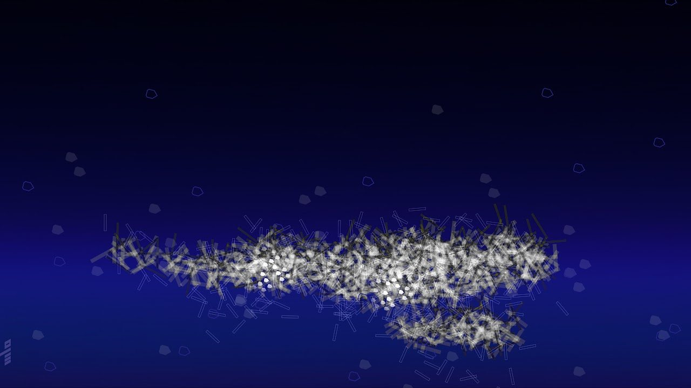
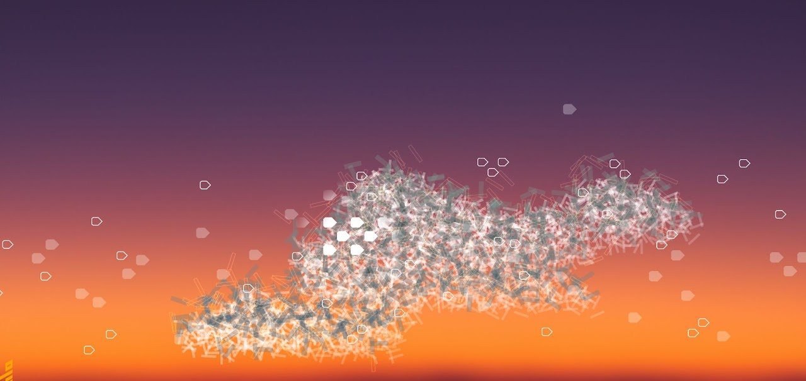
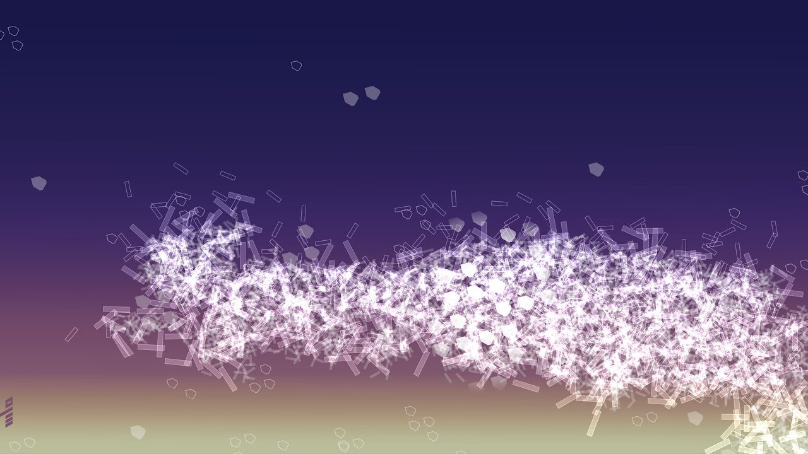
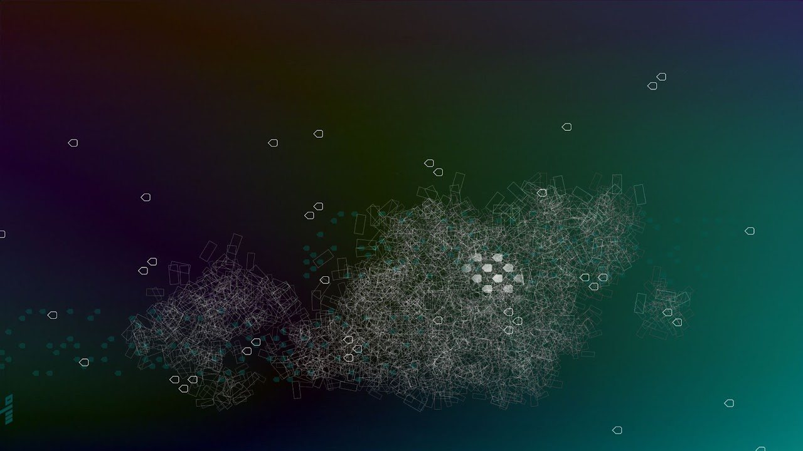
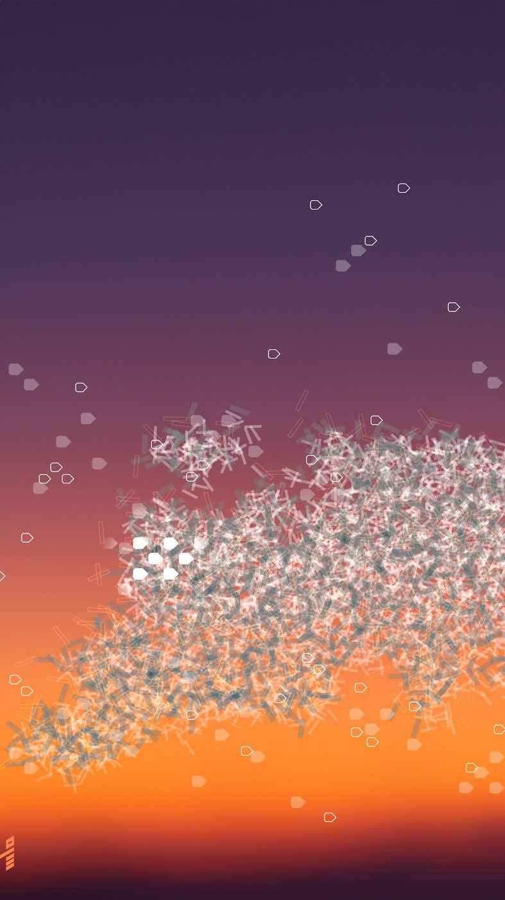
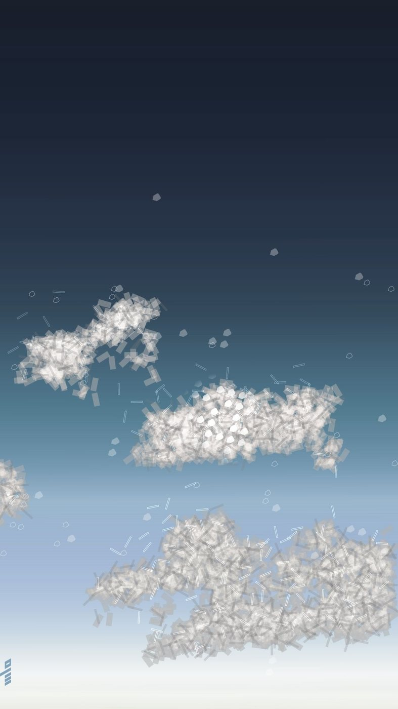
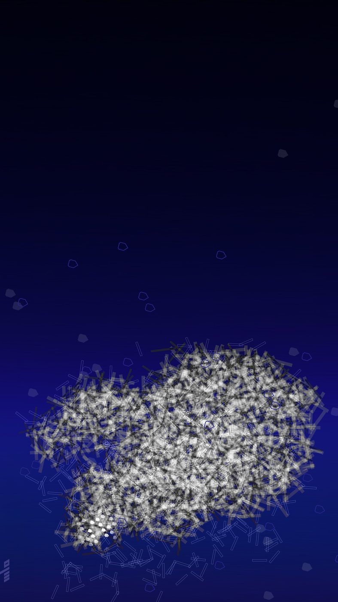
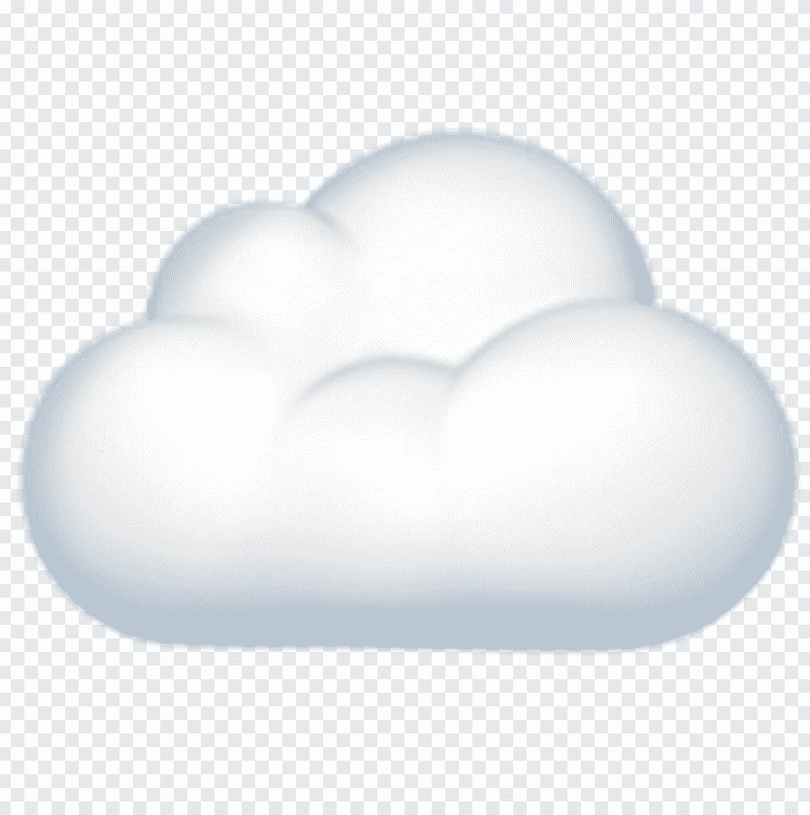
Martin Lukas Ostachowski is an artist based in Canada who explores geometric abstraction and minimalism using physical and digital languages through the use of technologies like blockchain. He has exhibited his works at DYOR in Kunstahalle Zurich, Icons of Crypto Art in Dubai Design District, Bitcoin Renaissance in Miami, Dear Block Chen at Solid Art in Taipei, CADAF Online Contemporary and Digital Art Fair in Paris, and The Past of the Future: A Retrospective of Historical NFTs in Barcelona, among other locations around the world.
Noctilucent Mementi, Martin Lukas Ostachowski. A curated collection on sovrn.art.